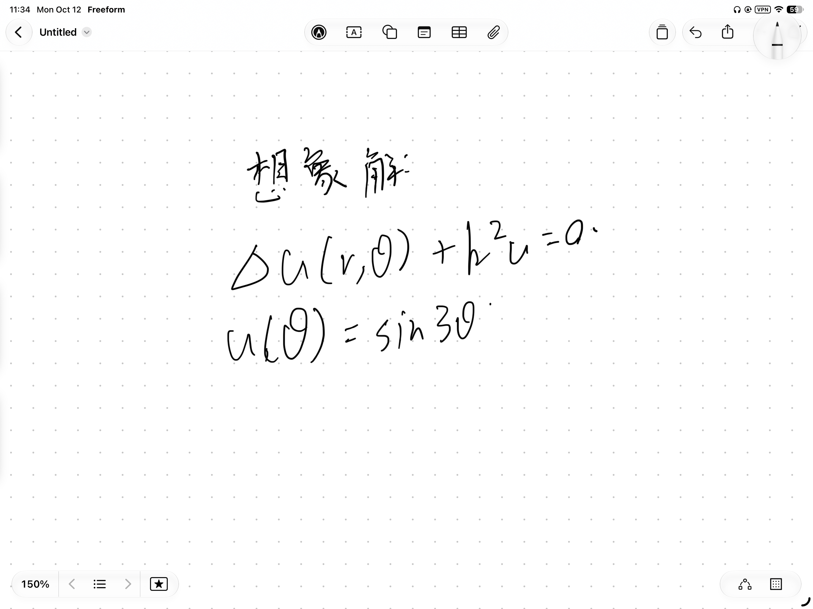

RealTimeManim

pip install real-time-manim
pip install real-time-manim

Real time, because rendering stops being a time limitation. Real life, because you watch your animation happen instead of waiting for it.
With the rebuilt pipeline, real-time-manim shows you every single frame as soon as it renders. Reworking and adjusting your scene is quick and easy, and you always know where you are.

Start with the Manim code you already write. Zero API changes. End somewhere ManimCE can't reach: Vulkan, a deeper test suite, fewer bugs.
real-time-manim is built on Vulkan, replacing ManimCE's OpenGL and Cairo renderers. Vulkan is newer and lower-level, which means faster, hardware-accelerated rendering, with native per-type senders for the shapes you draw.
We also test more than ManimCE does. Dozens of per-feature tests, plus scripts that verify real renders, catch bugs before you ever see them. Fewer bugs, smarter logic, more features.

real-time-manim is the basis. Manteraction is the artifact: math animation you won't just watch. You'll touch it.
You'll drag the timeline, preview every change instantly, and view your scene from any camera angle. No coding needed, and a supplemental coding platform for custom behaviour. You'll publish what you build as a plugin and take in everyone else's.